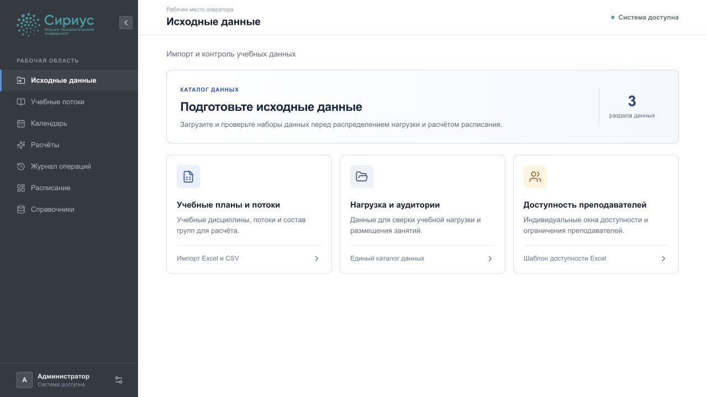
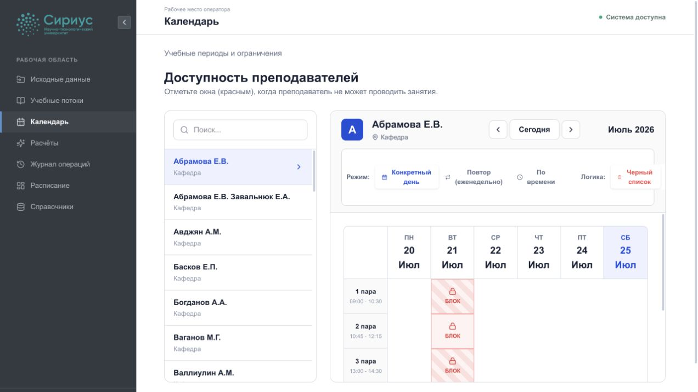
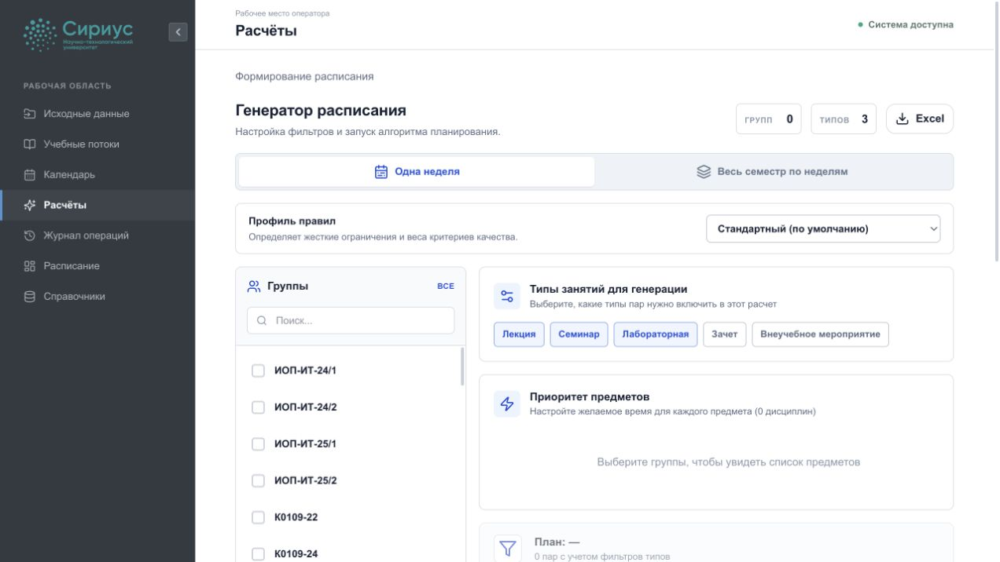
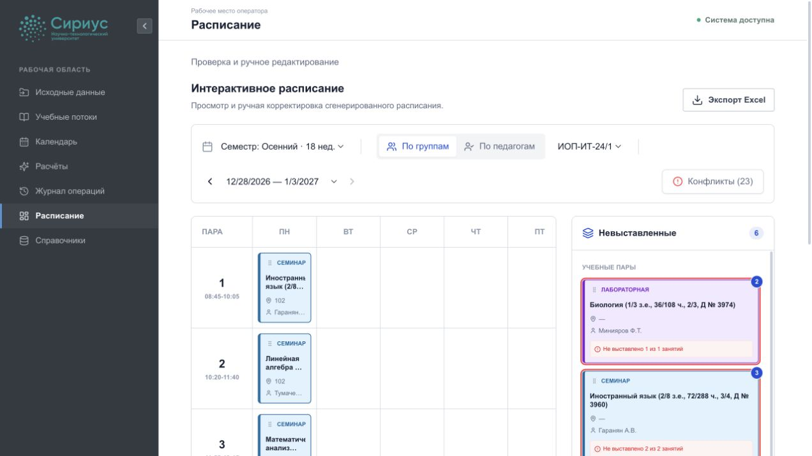
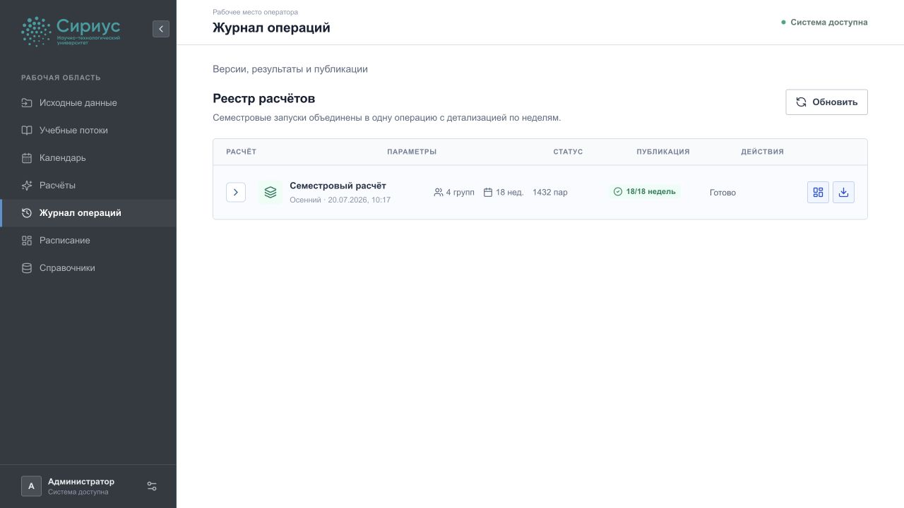

Руководство оператора расписания
- Для кого:
Операторы расписания
- Результат:
согласованная и опубликованная версия расписания
Введение
Система формирует расписание на основе учебных потоков, доступности ресурсов, календаря и правил. Расчёт выполняется асинхронно; его результат всегда сохраняется как отдельная версия.
1. Подготовка исходных данных
Откройте раздел «Исходные данные» и загрузите файл учебной нагрузки.
Поддерживаются файлы .xls, .xlsx и .csv.

Стартовая страница подготовки учебных планов, нагрузки и доступности преподавателей.
Выберите актуальный файл и запустите импорт.
Убедитесь, что система сообщила количество добавленных потоков и групп.
Откройте историю импорта и сохраните сведения о применённой партии.
Если загрузка ошибочна, удалите её до начала работы с созданными потоками.
Предупреждение
Удаление партии импорта удаляет связанные потоки. Не удаляйте партию, если на её основе уже подготовлена версия, переданная на согласование.
2. Проверка учебных потоков
В разделе «Учебные потоки» проверьте группу, дисциплину, преподавателя, тип занятия и количество занятий. Отфильтруйте данные по группе и типу занятия. Поток, который не должен участвовать в расчёте, отметьте как исключённый.
Перед расчётом убедитесь:
у потока назначены группа и учебная нагрузка;
для занятия указан допустимый тип;
преподаватель и аудитория определены либо могут быть подобраны системой;
исключённые потоки действительно не должны попасть в итоговую сетку.
3. Календарь и ограничения
В разделе «Календарь» создайте учебный период с датами начала и окончания. Период содержит последовательность недель, для каждой из которых хранится отдельная нагрузка.
Добавьте правила доступности для преподавателя, группы, аудитории или всей организации. Правило может действовать еженедельно, в определённую дату или в диапазоне дат; режимы — «недоступно», «доступно», «предпочтительно». Жёсткое правило нельзя нарушать, а мягкое влияет на качество решения через вес 1–10.

Пример настройки доступности преподавателя в календаре.
4. Распределение и запуск расчёта
Откройте «Расчёты» и выберите подготовленный период или недели.
Распределите нагрузку по неделям, настройте приоритеты и отметьте праздники.
Запустите расчёт и дождитесь статуса завершения.
При необходимости откройте компоненты и диагностику задачи.

Экран выбора групп, типов занятий и профиля правил перед запуском расчёта.
Важно
Одна задача ограничена горизонтом в 14 календарных дней. Семестр рассчитывается последовательностью недельных задач. Одновременный запуск расчётов в пересекающейся области возвращает конфликт HTTP 409.
5. Проверка и ручное редактирование
В разделе «Расписание» выберите расчёт, группу и неделю. Карточка занятия содержит дисциплину, тип, преподавателя, аудиторию и предупреждение.
При ручном изменении даты, пары, преподавателя или аудитории сервер проверяет:
пересечение группы;
пересечение преподавателя;
двойное использование аудитории;
правила доступности;
активность аудитории и попадание даты в период версии.
Если запись нельзя перемещать при следующем расчёте, включите фиксацию. При конфликте сервер отклоняет изменение и возвращает перечень причин.

Просмотр расписания по группе: сетка занятий и список невставленных пар.
6. Публикация и экспорт
В «Журнале операций» найдите готовую версию. Состояния публикации:
draft — черновик, доступный для проверки и ручного редактирования;
published — действующая версия, доступная только для чтения;
archived — ранее опубликованная или снятая версия.
Публикация новой версии архивирует предыдущую опубликованную версию того же периода. Экспорт без явного выбора задачи формирует Excel по опубликованной версии. Каждая ручная правка увеличивает редакцию версии, поэтому выгрузка однозначно соответствует открытому состоянию расписания.

Реестр расчётов со статусом, параметрами, публикацией и действиями.